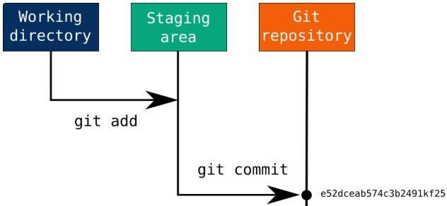
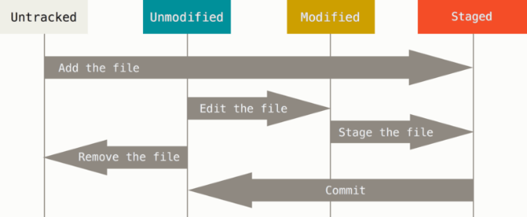

Local Repository = 로컬 저장소(내 PC저장소)
Remote Repository = 원격 저장소(ex Git Hub)
Git에는 크게 3가지 공간
Working directory [Worktree] (Local Repository) > Staging area(index) > Git Repository(remote Repository)
Working directory의 파일은 먼저 크게 tracked, UnTracked의 두 가지 상태
Tracked = git이 파일의 변경을 감지하여 사용자에게 알려주는 것과 같이 파일을 추적, 관리하는 상태
파일을 새로 만들 경우 Untracked (Git이 파일을 관리하게 하려면 파일을 추가해야 한다)
Tracked 상태의 파일들은 다시 크게 modified, UnModified, Staged 3개의 상태
Modified = 파일이 수정된 상태
Staged = commit으로 저장소에 기록될 상태
* 한 번 git add를 하면 직접 git rm --cached
* Git을 설치하고 나서 먼저 사용자 정보 등록 (Git은 commit 할 때 마다 이 정보 사용, 한 번 commit 한 후에는 변경 X) *
branch? = 브랜치란 독립적으로 어떤 작업을 진행하기 위한 개념, 필요에 의해 만들어지는 각각의 브랜치는 다른 브랜치의 영향을 받지 않기 때문에 여러 작업을 동시에 진행가능
HEAD = 현재 작업 중인 브랜치를 가르킴(HEAD만 이동가능)
.png)
.png)
git config --global user.name [name] = 사용자 정보 등록
git config --global user.email [email@email] = 사용자 정보 등록
git init = 로컬 디렉토리 하나를 선택해서 Git 저장소를 적용
cd [.. / 폴더명] = .. 사용시 상위 디렉토리 / 폴더명 사용시 하위 디렉토리로 이동
touch [name.확장자] = 파일 생성
git status = 파일 상태 확인
git add [file] = 실행한 시점의 파일을 Staging Area에 추가(파일 이름에 . 사용시 폴더 안의 모든 파일 추가),
파일을 tracked 상태로 등록, Merge 할 때 충돌난 상태의 파일을 Resolve 상태로 만듬
git rm [file] = Tracked 상태 해제, 파일 삭제 + 실제 working directory 파일 삭제
삭제한 파일은 Staged 상태가 되며 commit하면 파일은 삭제되고 Git은 이 파일을 더는 추적, 관리하지 않음
(Git 명령을 사용하지 않고 working directory에서 파일을 삭제하고 상태를 확인하면 Unstaged 상태라고 표시)
git rm --cached [file] = Staging Area에서만 제거, working directory에 있는 파일은 지우지 않고 남겨둠
(add 한 파일 다시 add 전으로, Untracked로 변경)
* git rm 사용 후 커밋->push하면 리모트 저장소에서도 삭제 *
git commit -m ["save messege"] = 변경사항 커밋(add된 파일[staged]만 commit)
git remote [저장소 이름(생략가능)]= 리모트 저장소 확인 / -v 옵션 사용시 단축이름과 URL
git remote add 저장소이름(기본 origin) 링크(https://github.com/계정/리포지토리) = 리모트 저장소 추가
git push 저장소이름(생략가능) 브랜치이름(생략가능) = 리모트 저장소로 브랜치를 push git push -u origin(저장소이름) master(브랜치이름) = -u옵션은 master branch를 -> 리모트저장소의 마스터 branch로 push
git remote remove 저장소이름(origin)= 기존 remote저장소 origin 제거
rm -rf .git = git 프로젝트 제거(폴더안의 숨김파일 .git 제거)
git pull = 리모트사이트의 master branch 파일을 가져와서 현재 내가 가지고 있는 파일과 merge
git clone 코드링크 [새로 지정할 디렉토리이름(생략가능)] = remot저장소 복제
git branch [이름] = [이름]의 브랜치 생성(새로 만든 브랜치도 작업하고 있던 마지막 커밋을 가리킴)
git checkout [브랜치이름] = [브랜치이름]의 브랜치로 이동(브랜치를 이동하면 워킹 디렉토리의 파일이 변경)
git merge [브랜치이름] = 현재 브랜치에 [브랜치이름]의 브랜치를 합침
git commit --amend = 이전의 커밋을 완전히 새로 고쳐서 새 커밋으로 변경, 이전의 커밋은 일어나지 않은 일이 되는 것이고 히스토리에도 남지 않음
( 아주 살짝 뭔가 빠뜨린 것을 넣거나 변경하는 것을 새 커밋으로 분리하지 않고 하나의 커밋에서 처리하는 것
너무 일찍 커밋했거나 어떤 파일을 빼먹었을 때 그리고 커밋 메시지를 잘못 적었을 때 사용.)
git reset <옵션> <돌아가고싶은 커밋(적지 않을 시 현재 버전)> = 돌아가려는 커밋으로 리파지토리는 재설정되고, 해당 커밋 이후의 이력은 사라짐
-hard : 돌아가려는 이력 이후의 모든 내용을 지워 버림
-soft : 돌아가려는 이력 이후의 내용이 지워지지 않고, 해당 내용의 stage(index)도 그대로 있어 바로 다시 커밋할 수 있는 상태로 남아있음
-mixed (옵션을 적지 않으면 mixed로 동작) : 돌아가려는 이력 이후 변경된 내용에 대해서는 남아있지만, 인덱스는 초기화
git revert <없던걸로 만들 커밋> = 커밋을 지정해 없던 커밋으로 만듬(취소) / 취소이력이 생김 gir revert <범위1커밋..범위2커밋> = 범위 선택도 가능
* 이미 push한 상태에서 reset하면 내 로컬 git만 돌아가고 원격 레파지토리와 몇 개뒤라고 표시되고 되돌릴 수 없음, 이미 push 한 코드라면 미련을 버리고 revert*
git reset [file / . (전체)] = 파일 상태를 Unstage로 변경
git checkout .(모든파일) / --[file] = working directory에서 Modified 파일을 되돌림